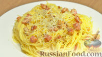

| Название блюда | Оценка (1-10) | Рецепт | Фото |
|---|---|---|---|
| Борщ украинский | Смотреть рецепт | ||
| Лазанья | Смотреть рецепт | ||
| Суши роллы Филадельфия | Смотреть рецепт | ||
| Окрошка на квасе | Смотреть рецепт | ||
| Цезарь с курицей | Смотреть рецепт | ||
| Овсяная каша | Смотреть рецепт | ||
| Паста карбонара | Смотреть рецепт |  | |
| Гороховый суп | Смотреть рецепт |